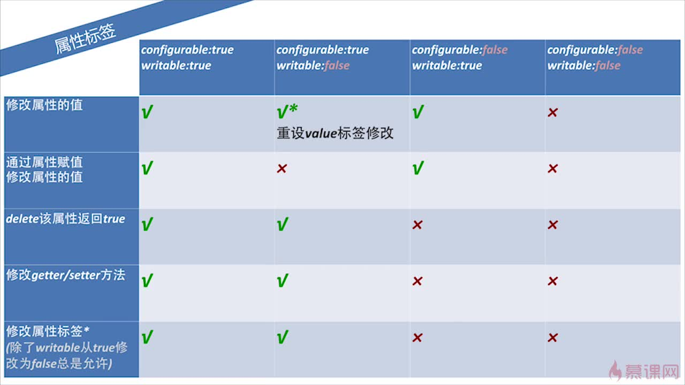

一.js高级
1.类型检测
a)typeof:返回一个值为其数据所属类型的字符串,检测函数返回"function",引用类型返回object,其中当使用typeof检测 NaN时,返回"number",因为NaN属于Number对象的一个特殊的值,检测null返回object. 适用于检测基本类型和function
b)instanceof:检测指定对象是否属于某一类,返回true或false,适用于检测自定义对象和本地对象,即js已经定义好的一些对象,注意:不适用于不同window或iframe之间的类型检测
instanceof要求右边是一个函数,否则会报错,左边则一般是对象,如果是基本类型则直接返回false,instanceof是判断右边构造函数的prototype属性是否出现在左边对象的原型链上.
c)Object.prototype.toString.apply():返回一个值为 "[object 类型]"的字符串,适用于检测内置对象(Global, Math)以及基本数据类型,遇到null或undefined失效
d)检测null使用严格等于 ===
2.调用无参构造函数时可以省略小括号;
3.运算符
a)逗号运算符
var val = (表达式1, 表达式2, 表达式3...);
会依次计算各个表达式的值,最终整个表达式的值以最右边的为主
b)delete运算符,用于删除对象的属性
使用方法: delete 对象名.属性名
前提:指定对象的该属性是可删除的,默认是可删除的,设置方式
Object.defineProperty(对象名, "属性名", {configurable : true或false, [value : 属性值]}); 其value是当想要删除属性时设置的值,可不写
c)in运算符
判断某一属性是否存在于指定对象中: "属性名" in 对象
4.作用域
代码块block: 直接以花括号开头的一段代码
js中没有块级作用域,在块里定义变量和在代码块外定义变量是一样的
5.try-catch
当多层try catch嵌套时, 如果内部异常没有catch块且外层能够捕获该异常,则会跳转到外层的catch块,在这之前会执行内层的finally语句, 总之就是当内层没有解决异常时,抛给外层时会先执行finally语句
6.严格模式
a)使用方式:可以再某个函数内或者整个js代码的开头加上"use strict";
b)严格模式的作用
①不允许使用with
②不允许未声明的变量被赋值
③arguments,类似于一个参数的数组,与传入的参数绑定,当修改arguments数组的某一下标的值时,其对应的参数的值也会被改变,不过当未传入参数时,其值为undefined,此时修改arguments数组对应的值并不能改变该参数的值.
严格模式下arguments会变为参数的静态副本,对其修改并不会影响传入的参数,不过当传入的参数为对象时,通过arguments数组修改对象的属性值依然是可以的
④delete参数.函数名会报错,之前只会返回false
⑤delete不可配置(configurable:false)的属性会报错,之前只会返回false
⑥对象的属性名重复会报错,非严格模式下属性名重复是可以的,其值为最右边的为准
⑦禁止八进制的字面量
⑧eval,arguments变为关键字
ps:在函数声明前加上 ! 可以让解释器理解为函数表达式,就能使其自动调用了
7.原型链
①通常定义的函数对象都默认的带有一个prototype对象属性,通过构造器创建的对象其原型[[proto]]会指向构造器的对象属性prototype,构造器的prototype的原型会指向Object的prototype属性,而Object的prototype属性也是有原型的,指向null
②当访问该对象的属性或方法时,若该对象没有,则通过其原型链逐级向上查找,如果找到null还没有找到的话,就会返回undefined,不过当访问某个属性返回undefined时,不一定代表没有该属性,可能只是该属性被赋为undefined
③要想访问原型链上的某一属性时,得删除掉对象上的该属性
④给对象赋值时,并不会通过原型链查找,删除对象的属性时,并不会影响到原型链上的属性
⑤hasOwnProperty("属性名")方法能够判断某一属性是不是其对象自身的.
⑥Object.create():通常传入的参数为一个对象,该方法会返回一个对象,并且其原型指向传入的参数,当传入一个null时.其返回的对象不会包含任何方法
8.属性操作
a)访问: 当访问一个对象不存在的属性时会返回undefined, 如果对象不存在的属性的属性时,会报错,通常在进行这种访问时,会先对属性进行是否存在的判断
b)删除: 通过delete, var定义的全局变量或局部变量,函数或者函数内的函数其configurable属性为false,即不可删除,隐式的全局变量,没有var声明的可以删除
c)属性检测
①in操作符判断指定属性是否存在于某一对象上,会通过原型链向上查找
②propertyIsEnumerable(属性名): 该方法可以判断某一对象上的指定属性是否是可以枚举的,可以通过Object.defineProperty(对象名, "属性名", 模板对象)来设置某一属性是否可枚举, 其模板对象的属性: {enumerable: true或false, [value : 属性值]}
d)属性枚举
①for...in遍历时,有可能会把原型链上的属性遍历出来,且遍历的顺序是不确定的,如果不想遍历原型链上的属性,可以在遍历时通过hasOwnProperty方法来过滤原型链上的属性
e)属性的getter/setter方法
①在构造函数中添加,以get/set开头: get/set 属性名(参数) {方法体},之间以逗号分隔,当访问或设置其对应属性的时,会调用对应的get/set方法
②当原型链上的某个属性设置了set或get方法时,对其属性的操作都是通过get/set进行,如果没有则无法进行.如果需要在对象上添加该属性,则可以通过Object.defineProperty方法为对象设置属性名,属性值以及configurable
9.属性标签
writable, enumerable, configurable
a)Object.getOwnPropertyDescriptor(),传入一个对象以及属性名的字符串,返回一个对象,包含了指定对象的指定属性的所有标签
b)Object.keys()函数.传入一个对象参数,返回一个包含可被遍历的属性的属性名的字符串数组

10.对象标签
a) _proto_ 原型标签
b) class 对象类型标签
只能通过Object.prototype.toString.call()方法获取
c) extensiable 是否可以继续添加属性
①Object.isExtensiable()函数判断某一对象是否可以扩展属性
②Object.preventExtensions()函数可以使某个对象不可扩展属性
③Object.seal()函数可以是传入的对象的所有属性的configurable标签设为false
④Object.freeze():使传入的对象的所有属性标签设为false
11.序列化
a)JSON.stringify():传入一个对象,返回一个属性序列化后的字符串
b)属性值为undefined的属性不会被序列化,值为NaN和Infinity的属性其值会被处理为null, 日期类型的属性值会被转换为UTC的时间格式
c)解析json数据: JSON.parse(),传入要解析的json数据,返回一个包含对应的属性和属性值的对象
d)对象的自定义序列化方式,重写toJSON函数,使其返回一个新的结果